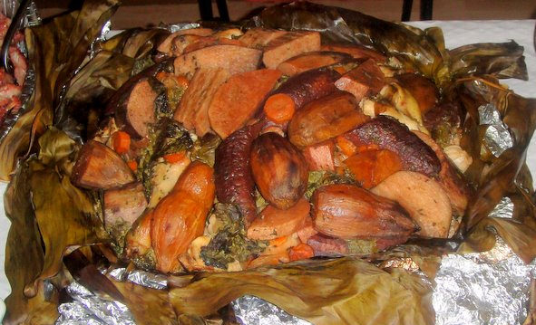

Mumu, The National Dish of Papua New Guinea

Mumu is the national dish of Papua New Guinea. It is a slow-cooked assortment of fruits, vegetables, root crops, and meat.
Mumu is also referred to as a method of cooking in Papua New Guinea where a makeshift outdoor oven is created using hot stones. In this dish, all of the ingredients are layered in the pot and slow-cooked until everything is tender.
Mumu is traditionally eaten with the hands.
How to make Mumu
Ingredients
- Volcanic rocks
- Firewood
- Taro,bananas,kaukau(sweet potatoes),potatoes,yams,etc
- Meat: Whole Pig, beef brisket, lamb rib or several whole chichens
- Kumu (greens)
- Banana leaves
- Coconut Cream
- Aromatics: ginger, garlic onions
Step 1: Prep the hot rocks
- Dig a pit large enough to accommodate stones and food ingredients that will be cooked.
- Placing large volcanic rocks as the first layer.
- Place firewood over the stone layer and place the second layer of
the stones ontop of the wood once set light the fire.
Step 2: Prep the food
- Peel wash root vegetables.
- Flavour the food and prevent it from drying out, coconut cream is added and the whole lot wrapped in coconut and banana leaves, individually and as a whole.
Step 3:Load the Mumu
- Remove the firewood, coals, charcoal from the pit
- Place hole pile of banana leave over the hot rocks, the start placing the root vegetables in first followed by the meat and lasly the greens
- Place another layer of hot rocks ontop the food
- Then cover with banana leaves or mats to seal in the heat and cook the food.
The mumu takes any from to an hour to two hours to cook
Step 4:Uncover the Mumu
- When it is decided that the food is ready, the top rocks are removed and the food is placed in the baskets.
Step 5: Serve your guests firsts and Enjoy!